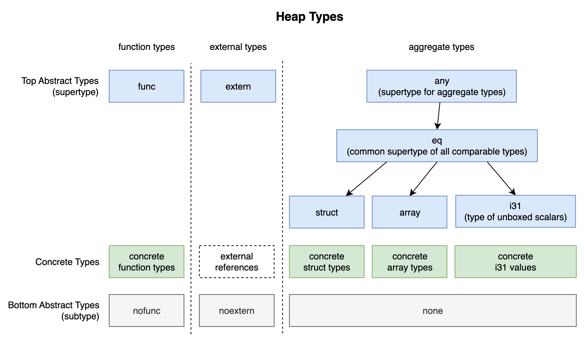
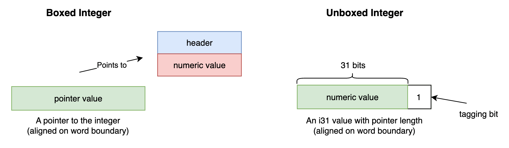

WebAssembly - GC v1 Extension
本篇来看的提案是 - “GC v1 Extension”，GitHub 链接在这里。该提案为 Wasm 提供了 v1 版垃圾回收机制（GC）的支持，相关概念的实现基于前述提案 “Reference Types” 以及 “Typed Function Reference”。WasmGC 是自 Wasm MVP 标准发布以来的一次重大更新，它为托管类编程语言（如 Kotlin、PHP 等）提供了可以直接利用宿主 GC 的能力。
早期的 Wasm MVP 标准仅能处理数字类型值（primitive scalar），它们可以被存储在线性内存中，或在宿主环境（host）之间进行交换。随着引用类型相关提案的出现，Wasm 开始能够“接触”更抽象的数据类型，比如宿主环境中的非数值类型 extern，以及函数类型 func。而 WasmGC 提案在此基础之上又进一步补全了 Wasm 的类型系统，将堆类型（heap types）进一步完善，使得上层语言中的复杂复合类型在被编译到 Wasm 代码时，仍能够保留足够多的类型信息。这使得宿主环境 GC 能够精确统计这些复杂类型对象间的引用关系，以便为正确执行垃圾回收提供保障。
一个例子
先来看下面这段 WAT 代码，其中使用了 WasmGC 提案中新增加的类型和指令。
(module
(type $Node (struct (field $next (ref null $Node)) (field $val i32)))
(global $head (export "head") (mut (ref null $Node)) (ref.null $Node))
(func $start
(local $i i32)
(loop $loop
(global.set $head
(struct.new $Node
(global.get $head)
(local.get $i)
)
)
(local.set $i
(i32.add
(local.get $i)
(i32.const 1)
)
)
(br_if $loop
(i32.le_u
(local.get $i)
(i32.const 9)
)
)
)
)
(start $start)
)
在代码第 2 行类型段（type section）的定义中，我们使用 WasmGC 提案新引入的堆类型 structtype 定义了包含有异构数据的结构体类型 $Node。该类型包含两个字段，我们使用关键字 field 分别定义：
- 字段 $next 为类型 $Node 自身的 nullable 引用；
- 字段 $val 为一个 i32 类型整数。
代码第 3 行，名为 $head 的 global 具有同字段 $next 一样的类型，其值可变，初始值被设为 null。
代码第 4 行函数 $start 的内部主要由一个循环结构组成，循环体包含三个部分：代码第 8 行的指令 struct.new <typeidx> 用于为给定结构体类型 “typeidx”（这里即 $Node）分配内存，并根据给定值初始化其相关字段，该指令由 WasmGC 提案引入。代码第 13~18 行将函数内的 local 变量 $i 的值加一，该值用于控制循环体的迭代次数。代码第 19~24 行判断迭代是否继续，若 $i 的值大于 10，则退出。
可以看到，能够在 Wasm 代码中直接保留上层语言代码中由用户自定义（或预定义）的复合数据类型的类型信息是 WasmGC 提案的一个重要改进，这使得宿主平台可以识别和收集 root，并在进行垃圾回收时了解如何扫描对象内存。
上述 WAT 代码可能由类似以下 C++ 代码编译而成。$start 函数构建了一个含有 10 个节点的单链表结构。
#include <cstdint>
struct Node {
struct Node* $next;
int32_t $val;
};
thread_local Node* head = nullptr;
void $start(void) {
int32_t $i = 0;
while (true) {
head = new Node { .$next = head, .$val = $i };
$i = $i + 1;
if ($i > 10) break;
}
}
类型
WasmGC 提案补全了 Wasm 的类型版图。堆类型是对各种运行时对象类型的完整描述，其整体设计如下图所示：
WasmGC - Heap Types 类型体系
整个类型体系由几个不相交的并列层次结构组成，其中，“function types” 列描述函数类型；“external types” 列描述外部引用类型，这些引用一般映射到宿主环境中的复杂数据类型；“aggregate types” 列描述可能需要动态维护内存的复合类型，比如结构 struct、数组 array，以及“非装箱标量”（unboxed scalars）i31。
struct / array 的定义很直观，两者分别为异构 / 同构复合类型。i31 类型用于存放“非装箱”的数字标量值，这是一种运行时 / 语言编译器常用的类型技巧，可用于高效区分内存中的指针和数字值，并提供一致的访问形式。该类型在表示数字值时并未采用托管语言（managed language）常用的装箱值（boxed value）形式，即将值分为 “头部 + 数据” 两部分存放。为了高效访问，指针值在大部分体系上都会对齐存放。利用这一特征，i31 类型可以直接将数字值存放到指针的高 31 位（Wasm32），并将最后一位作为“标记位”固定为 1，这是一种“标记指针”（tagged pointer）的常见用法。
Unboxed Integer 基本结构
再回到 WasmGC 的类型体系。体系中的每一列里，类型又可分为不同层次，中间绿色部分为具体类型定义，比如：(func (param i32) (result i32)) 为一个具体的函数类型，该类型定义了一类函数，它们接收一个 i32 值作为参数，返回一个 i32 值作为结果。同理，struct、array 都可以有具体的类型，i31 则指代具体标量值。外部引用由于引用宿主环境中的不透明值（opaque value），因此不区分具体类型。
在具体类型之上和之下的分别为处于不同层次的抽象类型（abstract type）。蓝色部分的抽象类型为对应具体类型的“父类型（supertype）”，灰色部分为对应具体类型的“子类型（subtype）”。对于复合类型来说，其父类型又分为三个层次，最顶层为类型 any，它是所有复合类型（包括抽象类型）的父类型；接着是类型 eq，它是所有可比较引用类型（即可使用指令 ref.eq 来比对给定的两个引用是否相等）的父类型；在此之下，则为各种具体 struct、array，以及 i31 类型对应的直接父类型。同样的，每种具体类型也有相应统一的底层子类型。比如 nofunc 为所有具体函数类型的子类型，其他同理。
这样的类型体系设计可以让我们在 Wasm 中实现类型多态（subtyping）。比如下面这个例子：
(module
(type $struct (sub (struct (field $val i32))))
(func $bar (param (ref null any)) (result i32)
(struct.get $struct $val (ref.cast (ref $struct) (local.get 0)))
)
(func (export "foo") (result i32)
(call $bar (struct.new $struct
(i32.const 10)
))
)
)
这里，函数 $bar 接收一个 any 类型的 nullable 引用，并在其内部将该引用转换（cast）为特定的 $struct 类型引用，然后获取该对象上字段 $val 的值并返回。在函数 $foo 的定义中，我们创建了一个 $struct 类型的对象，并将其引用作为参数调用了函数 $bar。any 作为所有复合类型的顶层父类型，它可以引用任何“旗下”的子类型。同理，在堆类型体系中的所有类型均符合“父类型引用可以指向具体子类型值”这一规则。
再谈“非装箱标量”类型
以下 C++ 代码展示了非装箱标量类型（如 Wasm32 下的 i31 类型）的一种可能用法。
#include <cstdint>
enum class HEAP_OBJ_TYPE {};
struct HeapObj {
HEAP_OBJ_TYPE tag;
};
using typeUnboxedScalar = std::uintptr_t; // An "i31" similar type.
union HeapObjPointer {
HeapObj* obj;
typeUnboxedScalar us;
};
extern void GCScan(HeapObj*);
auto isPtr(const HeapObjPointer& ptr) { return (ptr.us & 1) == 0; }
auto retrieveUS(const HeapObjPointer& ptr) { return ptr.us >> 1; }
auto retrievePtr(const HeapObjPointer& ptr) { return ptr.obj; }
auto createUnboxedScalar(unsigned int num) { return HeapObjPointer { .us = (num << 1 | 1) }; }
auto createObj(void) { return HeapObjPointer { .obj = new HeapObj {} }; }
int main(void) {
/**
* (type $vec (array (ref null any)))
* ...
* (array.new_fixed $vec
* (ref.i31 (i32.const 10))
* (ref.i31 (i32.const 20))
* (struct.new ...)
* )
*/
HeapObjPointer ptrs[] = {
createUnboxedScalar(10),
createUnboxedScalar(20),
createObj(),
};
for (const auto& i : ptrs) {
if (isPtr(i)) {
GCScan(i.obj);
}
}
}
通过将非装箱标量值 “typeUnboxedScalar” 与装箱值指针 “Obj*” 一同组成联合体 ObjPointer 来作为对所有堆类型对象的引用，宿主实现可以更加方便地模拟类型多态，并在进行垃圾回收时高效地识别指针与数字值。
类型定义
WasmGC 提案提出了新的类型定义方式。比如，我们可以轻松定义“相互递归类型”（mutually recursive types），这是一种 “iso-recursive” 形式的递归类型：
(module
(rec
(type $t1 (struct (field i32 (ref $t2))))
(type $t2 (struct (field i64 (ref $t1))))
)
)
默认情况下，所有未包裹在 rec 结构内的单独类型定义都是 (rec (type …)) 的缩写形式，这在进行类型匹配时需要尤其注意。至于为何这样设计，提案作者 Andreas Rossberg 给出了如下回答：
The factoring of types into recursion groups matters for type equivalence: two types are only deemed equivalent when they are defined at the same position in equivalently structured recursion groups. The reasons for this seemingly restrictive semantics are rather technical, but boil down to having a linear algorithm for deciding type equivalence and performing type canonicalisation, which is important to keep validation in engines tractable.
类型多态也可以在自定义类型中存在：
(module
(type $struct (sub (struct (field i32))))
(type $structSub (sub $struct (struct (field i32) (field i32))))
(func $bar (param (ref null $struct)) (result i32)
(i32.add
(struct.get $structSub 0 (ref.cast (ref $structSub) (local.get 0))) ;; Runtime down-cast.
(struct.get $structSub 1 (ref.cast (ref $structSub) (local.get 0)))
)
)
(func (export "foo") (result i32)
(call $bar (struct.new $structSub
(i32.const 10)
(i32.const 20)
))
)
)
在上述类型 $structSub 的定义中，我们使用 sub 关键字标记当前类型为指定类型 $struct 的一个子类型。这样，函数 $bar 的参数便可依据类型多态原则，接受一个 $struct 类型的子类型引用。在运行时，该引用会借由指令 ref.cast 进行适当的转型。我们还可以同时使用 final 关键字来阻止当前类型被进一步“继承”。若 sub 关键字后没有跟随 “<typeidx>” 则表示当前类型不作为任何类型的子类型。
Web Embedding
在当前的 WasmGC v1 提案中，Wasm 上下文内创建的对象值是以不透明（opaque）值的形式暴露给 JavaScript 的，这也就意味我们无法在 JavaScript 环境下直接访问比如 struct、array 等 Wasm 堆数据类型（TypeError: WebAssembly objects are opaque）。Wasm 与 JS 之间的互操作性可能会在将来的相关提案中扩展。
小结
WasmGC 提案定义了可以由宿主环境管理的堆类型，如 struct、array，以及用于描述这些类型具体特征和关系的类型系统。通过这种方式，托管语言代码在编译至 Wasm 时便可移除 GC 以及内存管理相关代码，使得编译产物的体积大大减小。但另一方面，WasmGC 引入的更多高抽象层次（high-level）类型和指令使得源语言代码的语义可能更难被精准描述，而这些问题都会在 “GC Post-MVP” 阶段被进一步讨论。从代码优化的角度来看，更多的高抽象层次信息为代码的执行规则提供了更多说明，这使得基于 WasmGC 移植的 Wasm 代码相较于 MVP 时期可以被工具链（如 Binaryen）进一步优化。
评论 | Comments